# Начало
Влезте с потребителско име и парола. Активната фирма се избира от
падащото меню в горната лента — цялото счетоводство е с нея.
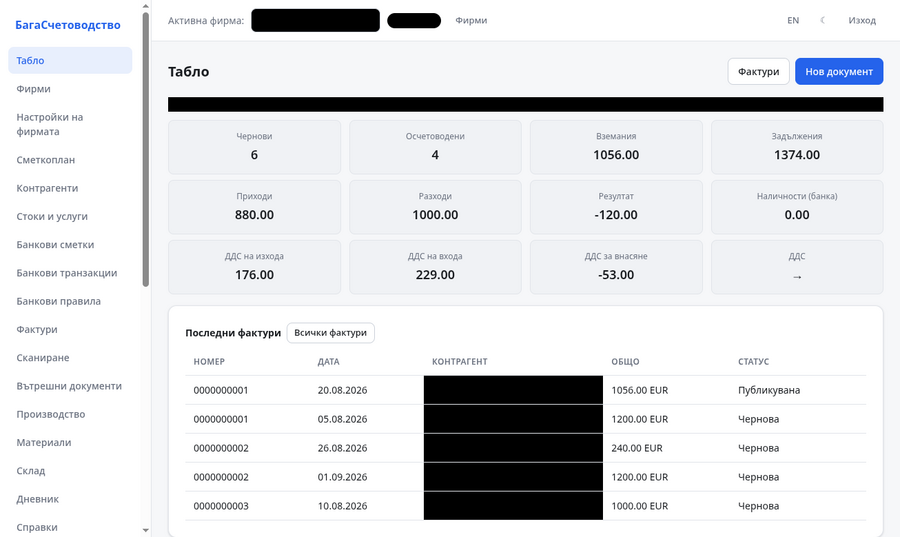
Табло — преглед на активната фирма.
- От менюто изберете Фирми, за да добавите или редактирате фирма.
- Задайте активна фирма от падащото меню в горната лента.
- Продължете към Настройки на фирмата за реквизити, ДДС и кочани.
# Фирми и настройки
Фирмите са отделни счетоводни субекти: всяка си има ЕИК, ДДС номер,
сметкоплан, контрагенти и документи. Настройките се отварят от менюто
Настройки на фирмата.
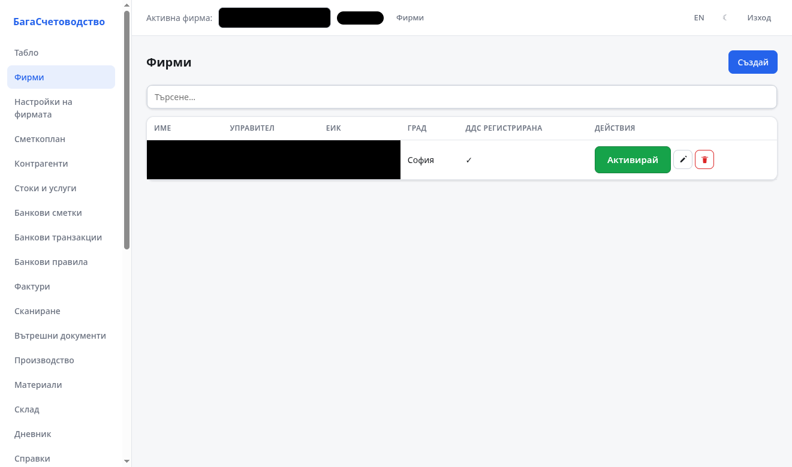
Списък на фирмите (имената са зачертани).
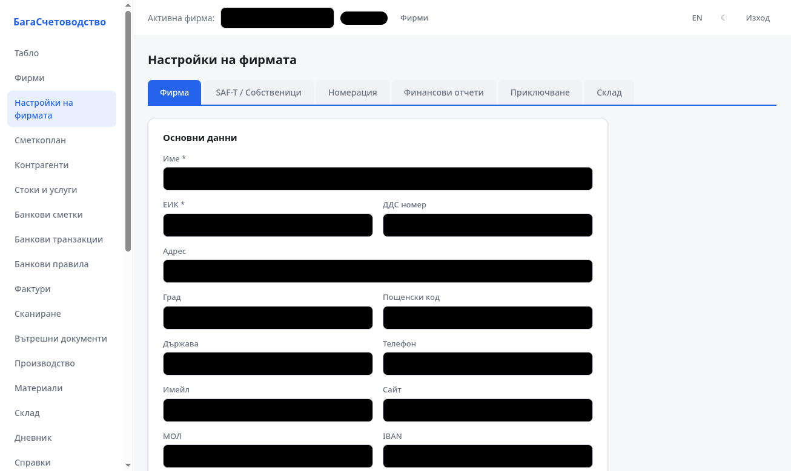
Настройки на фирмата — реквизити, ДДС, кочани, сметкоплан и склад.
- Таб Фирма — име, ЕИК, ДДС регистрация, управител, МОЛ, IBAN.
- Таб SAF-T / Собственици — адрес, данъчна основа, метод на оценка (WAC/FIFO/LIFO).
- Таб Кочани — номерация на изходящи документи.
- Таб Склад — правила за изписване (складова → насрещна сметка).
- Таб Приключване — карта за месечно приключване на сметки.
# Сметкоплан
Сметкопланът е списъкът от сметки (кодове по NRA). Използва се при
ръчни записи, фактури и справки. Търсачката филтрира по номер или име.
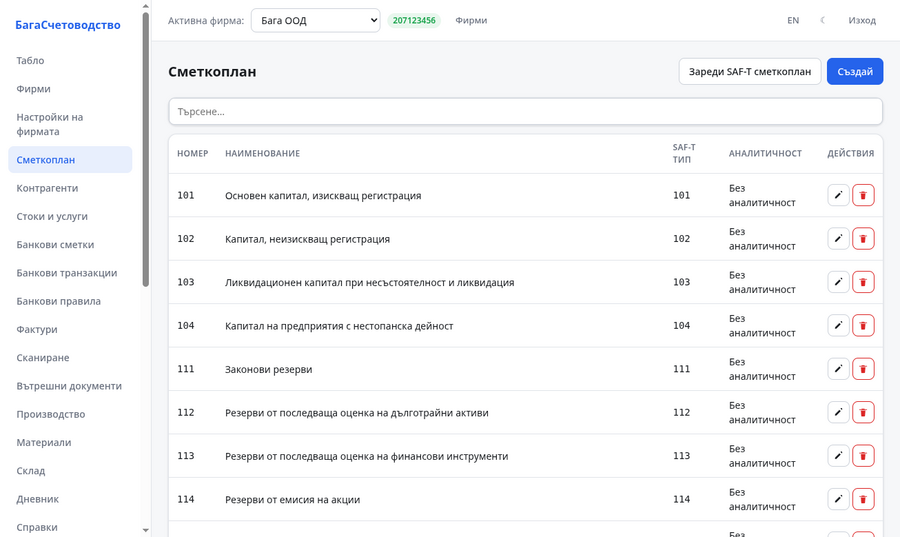
Сметкоплан — сметки по код.
# Контрагенти
Клиенти и доставчици. При добавяне на ДДС номер може да извикате
„Извличай от VIES“ — име и адрес идват от ЕК. Ако фирмата
има Mistral ключ, адресът се разделя автоматично за SAF-T.
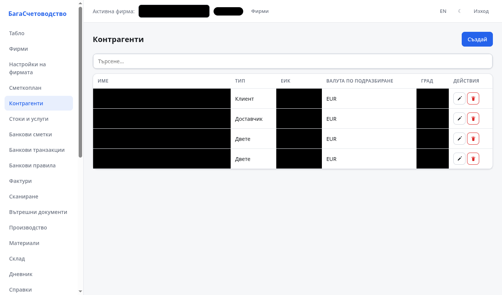
Контрагенти (имената са зачертани).
# Фактури
Данъчни документи по ППДДС и проформа. Отивате на
Фактури → Нов документ и попълвате заглавната информация,
получателя и редовете с артикули/услуги.
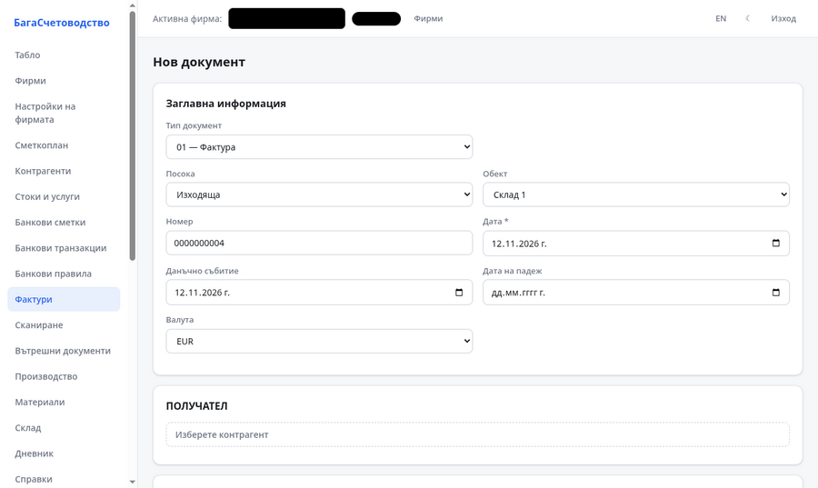
Нов документ — тип, номер, дати, валута, получател, редове.
- Изберете тип документ (01 — фактура, 03/13/23 — кредитно/дебитно известие, проформа).
- Задайте посока (изходяща/входяща) и обект (склад).
- В Получател изберете контрагент.
- Добавете редове — описание, количество, цена, ДДС.
- Запишете, след това постнете (осчетоводяване) и принтирайте (PDF/DOCX/ODT или UBL).
Сумата може да е отрицателна (сторно/кредитно) — записва се
с минус по същите сметки, без обръщане на Дт/Кт.
# Сканиране на документи (AI)
Отидете на Сканиране и качете PDF, снимка или UBL XML
(Peppol, фактура или кредитно известие). Резултатът е чернова с редове —
не запис по сметки; преглеждате преди запис.
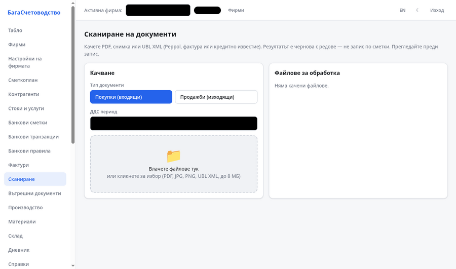
Сканиране — качване на PDF/снимка/UBL, избор на тип (покупки/продажби) и ДДС период.
- Изберете тип документ: Покупки (входящи) или Продажби (изходящи).
- Задайте ДДС период и качете файла (до 8 МБ).
- AI (Mistral) разпознава реда; за UBL XML се чете директно, без ключ.
- Резултатът е чернова — проверете и запишете.
Ако нямате Mistral ключ, UBL XML (Peppol BIS) се обработва
без него. Ключът се задава в Настройки → Интеграции.
# Банкови транзакции
Импортирате банково извлечение (OBB XML, ISO camt.053, PostBank XML,
MT-940, CSV), преглеждате с дубликати и осчетоводявате. Филтърът по
дати — от/до. За една транзакция: Преглед (редакция),
Осчетоводи, Разнеси, Върни в чернова,
Изтрий. За много: чекбоксове и групово връщане/изтриване.
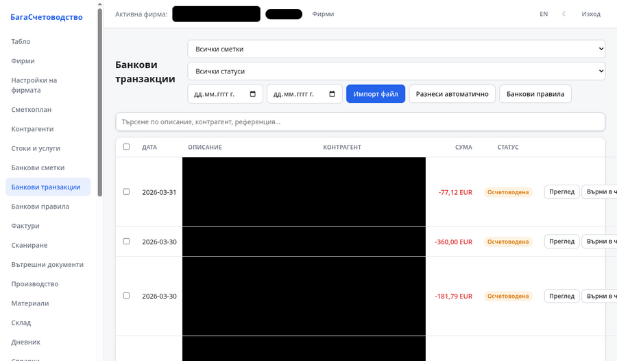
Банкови транзакции — филтри, действия, групов избор (имената са зачертани).
- Изберете банкова сметка и натиснете Импорт файл.
- В прегледа проверете дубликатите и след това импортирайте.
- За осчетоводяване изберете кореспондираща сметка (и контрагент).
- За валутна сметка курсът се взема от ЕЦБ автоматично.
- За месец назад: филтър по дати → чекбокс в заглавието → Изтрий, после импортирайте наново.
# Дневник (универсална статия)
Дневникът е универсална счетоводна статия: всеки ред носи
количество и курс, а стойността е производна —
amount = fx_quantity × fx_rate. При основната валута (EUR)
курс е 1 и стойността съвпада с количеството. Чужда валута е само по
валутна сметка; курс от ЕЦБ с бутона „Курс от ЕЦБ".
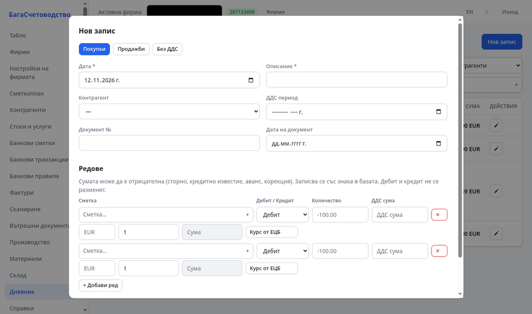
Нов запис — табове Покупки/Продажби/Без ДДС, редове с количество, валута, курс и стойност.
- Натиснете Нов запис и изберете таб: Покупки, Продажби или Без ДДС.
- Задайте дата, описание, контрагент и ДДС период.
- За всеки ред изберете сметка и посока (Дебит/Кредит) и въведете количество.
- За чужда валута въведете валута и курс (или извикайте „Курс от ЕЦБ") — стойността се преизчислява.
- Дебитът и кредитът трябва да балансират (✓), след това запишете.
Филтър в списъка: търсене, от/до дата, ДДС тип,
контрагент, сметка. Ръчен запис се изтрива с иконата на реда.
# Склад и материали
Складът пази наличности по обект с оценка WAC/FIFO/LIFO. Изписването
на материали е документ (чернова → потвърден): изважда от склада и прави
запис Дт разход / Кт складова сметка. Без изрична разходна
сметка се ползва правило за материал по складовата сметка на артикула.
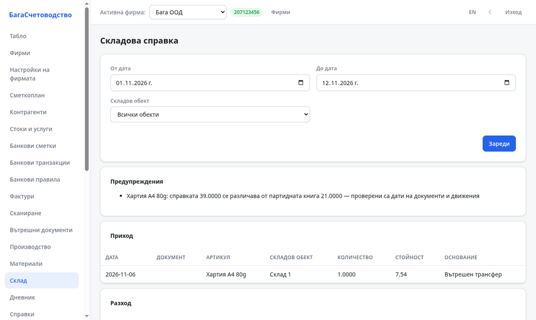
Склад — наличности и правила.
# Номенклатури (КН-8)
При създаване или редакция на артикул в Стоки и услуги
пишете името на материалния запас в полето „Код по КН8" —
системата търси в комбинираната номенклатура (КН-8, ~5000 позиции) и
предлага подходящ код. Кодът се взема и за справки и SAF-T.
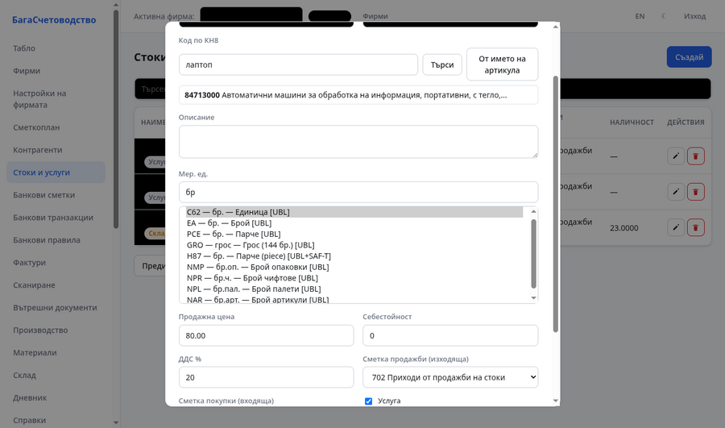
Стоки и услуги — „Код по КН8" с въведено „лаптоп" и предложението 84713000.
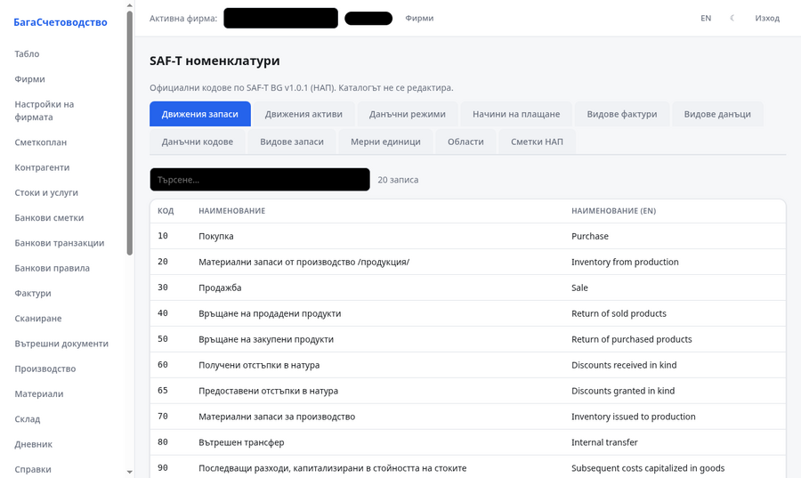
Каталог на номенклатурите (SAF-T, НАП) — търсене по код или име.
- Отворете артикул (нов или редакция) и в полето „Код по КН8" въведете името на материала.
- Натиснете „Търси" (или „От името на артикула") — излиза предложение с кода и описанието.
- Изберете кода — той се запазва в артикула.
Каталогът се отваря и от Номенклатури в менюто —
кодове по SAF-T BG v1.0.1 (НАП), без редакция.
# Справки
Екран Справки връща JSON (сумите с точка) и експорт
PDF/XLSX/ODS като таблица. Видове: оборотна ведомост, главна книга,
главна книга по кореспонденции, хронологичен журнал, по контрагент,
баланс, ОПР, паричен поток, собствен капитал.
Датите са ISO YYYY-MM-DD. По контрагент
се изисква counterpart_id. Експортът прави сумите числа,
за да се четат от българския Excel/Sheets.
За история на версиите вижте
Версии. Въпроси и проблеми:
github.com/bagalang/buchnative.